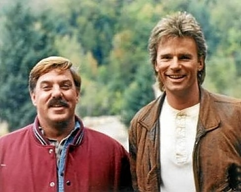

Esse é inesquecível! Até hoje o termo “MacGyver” é utilizado para se referir a alguém muito safo, que sabe se virar e fazer de tudo um pouco. A grande brincadeira e que de fato acontecia em alguns episódios é que MacGyver criava os artefatos mais elaborados com muito pouco, e assim se livrava das situações mais sem saída. Seu conhecimento científico era sua maior arma. Angus MacGyver, que marcaria para sempre a carreira do ator Richard Dean Anderson, era um agente secreto envolvido nas missões mais mirabolantes. Curiosamente, a fama do ator na época escalou para ele se tornar um símbolo sexual para as mulheres, e toda vez que um interesse amoroso para o protagonista era introduzido no seriado, o canal recebia cartas de fãs reclamando, o que causava a saída da pretendente do programa.

Jack Dalton e MacGyver
Mais bem sucedido que o item acima, Profissão Perigo (como ficou conhecido no Brasil) teve nada menos que 7 Temporadas, de 1985 a 1992 – quem viveu na época lembra das exibições da Globo aos domingos à tarde. Dois anos após o término da série, em 1994, foram produzidos dois filmes para a TV – MacGyver: Tesouro Perdido de Atlântida e MacGyver: Julgamento Final. Também ao contrário do item acima, a série ganhou um reboot bem sucedido em 2016, que já dura 5 temporadas e tem mais uma garantida para este ano. Quem protagoniza agora é Lucas Till e a produção ficou a cargo de ninguém menos que o mestre James Wan.